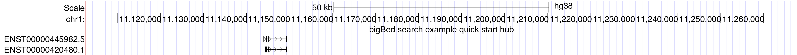
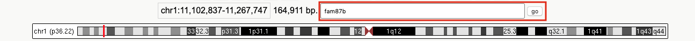

Track Hubs are a method of displaying remotely-hosted annotation data quickly and flexibly on any UCSC assembly or remotely-hosted sequence. Making your annotation data searchable is an important improvement to the usability of your hub, especially if your annotations are not otherwise represented on the Browser. This Quick Start Guide will go through making a searchable track hub from a GFF3 file; converting to a genePred, bed, and bigBed, then creating a trix search index file. This example will be made with the new "useOneFile" feature to avoid any need for separate genome.txt and trackDb.txt files.
Gather our settings and data files in a publicly-accessible directory (such as a university web-server, CyVerse, or Github). For more information on this, please see the hosting guide.
Copy the hub.txt file using
wget, curl, or copy-paste:
wget http://genome.ucsc.edu/goldenPath/help/examples/hubExamples/hubSearchable/hub.txtDownload some example GFF3 data from Gencode. This file happens to be long non-coding RNAs (lncRNAs):
wget ftp://ftp.ebi.ac.uk/pub/databases/gencode/Gencode_human/release_32/gencode.v32.long_noncoding_RNAs.gff3.gzNext, you will need to download four Genome Browser utilities to convert the GFF3 file to bigBed format and run the search index command. Similar commands exist to convert other file types. These are operating system specific:
| Utility Name | MacOS Download | Linux Download |
|---|---|---|
| gff3ToGenePred | Download | Download |
| genePredToBed | Download | Download |
| bedToBigBed | Download | Download |
| IxIxx | Download | Download |
In order to format the data, you will need to run a command to make those commands executable:
chmod +x gff3ToGenePred genePredToBed bedToBigBed IxIxx
Then run the first conversion from GFF3 to genePred, making sure to include
-geneNameAttr=gene_name so that gene symbol is used as the name2 instead of
ID number, and sorting by chromosome and position:
gff3ToGenePred -geneNameAttr=gene_name gencode.v32.long_noncoding_RNAs.gff3.gz stdout | sort -k2,2 -k4n,4n > gencode.v32.lncRNAs.genePredConvert that genePred file to a bed file:
genePredToBed gencode.v32.lncRNAs.genePred gencode.v32.lncRNAs.bed
Compress and index that bed file into a bigBed format, adding the
-extraIndex=name to allow EnstID searches:
bedToBigBed -extraIndex=name gencode.v32.lncRNAs.bed https://genome.ucsc.edu/goldenPath/help/hg38.chrom.sizes gencode.v32.lncRNAs.bb
If you would like to stop here, you will be able to display your bigBed hub and search for the
names that were indexed into the bigBed file (EnstID). You will not be able to use the
searchIndex and searchTrix trackDb setting, which require creating a
key and value search index for your file as shown below.
If you want to link your annotation names to anything other than
the field referrenced in the -extraIndex command, you will need to make and index
file. We will make an input file which will link one identifier (EnstID)
with search terms composed of gene symbols and EnstIDs. Below is one example of a command to
create an input file for the search indexing command:
cat gencode.v32.lncRNAs.genePred | awk '{print $1, $12, $1}' > input.txtTo examine or download that file, you can click here. Note that the first word is the key referenced in the BED file and the following search terms are associated aliases will be searchable to the location of the key. These search terms are case insensitive and allow partial word searches.
Finally you will make the index file (.ix) and the index of that index (.ixx) which helps the search run quickly even in large files.
ixIxx input.txt out.ix out.ixxEnter the URL to your hub on the Connected Hubs tab of the Track Data Hubs page. Alternately, you can enter your hub.txt URL in the following web address:
genome.ucsc.edu/cgi-bin/hgTracks?db=hg38&hubUrl=YourUrlHere
If you would like to look at an already-made example, click the following link which includes
hideTracks=1 to hide other tracks. After the link is a picture of what the hub
should look like:
https://genome.ucsc.edu/cgi-bin/hgTracks?db=hg38&hideTracks=1&hubUrl=http://genome.ucsc.edu/goldenPath/help/examples/hubExamples/hubSearchable/hub.txt
Once your hub displays, you should be able to type in a gene symbol or Enst ID and scroll down the results page until you see your search results.

You can type your search term (fam87b) in the box above the ideogram and press . Note that it is not case sensitive. Scrolling to the bottom of the search results page, you will see your searchable hub keyword that was linked with your search term. Clicking into it will bring you to the position of your search term.
If you are having problems, be sure all your files are publicly-accessible and that your server accepts byte-ranges. You can check using the following command to verify "Accept-Ranges: bytes" displays:
curl -IL http://yourURL/hub.txt
Note that the Browser waits 5 minutes before checking for any changes to these files. When
editing hub.txt, genomes.txt,and trackDb.txt, you can shorten this delay by adding
udcTimeout=1 to your URL. For more information, see the
Debugging and Updating Track Hubs section of
the Track Hub User Guide.
The hub.txt file is a configuration file with names, descriptions, and paths to other files.
The example below uses the setting useOneFile on to indicate that all the settings
and paths appear in only the hub.txt file as opposed to having two additional settings files
(genomes.txt and trackDb.txt). Please visit the UseOneFile guide for more information.
The most important settings to make the hub searchable appear in the third section, in what would
formerly be the trackDb.txt file. The searchIndex and searchTrix
indicate which fields are indexed in the bigBed file and where to find the .ix file respectively.
To see the actual hub.txt file for the above example, click
here.
hub MyHubsNameWithoutSpaces
shortLabel My Hub's Name
longLabel Name up to 80 characters versus shortLabel limited to 17 characters
email myEmail@address
descriptionUrl aboutMyHub.html
useOneFile on
genome assembly_database_2
track uniqueNameNoSpacesOrDots
type track_type
bigDataUrl track_data_url
shortLabel label 17 chars
longLabel long label up to 80 chars
visibiltiy hide/dense/squish/pack/full
searchIndex field,field2
searchTrix path/to/.ix/file